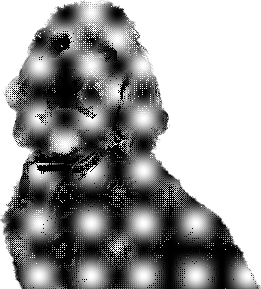

My Dog, Alfie
2023-04-02

This is an example blog post, solely created as an excuse to display this image of my dog Alfie, and so that there's something in public and rsync doesn't complain about the folder not existing when building the example site.
Why does the image look funny?
The image is dithered using Bayer Ordered Dithering. This creates a pretty distinct "cross-hatched" look, and more importantly cuts image size down massively to make pages more responsive. Dither it! is a great tool to quickly dither images online.